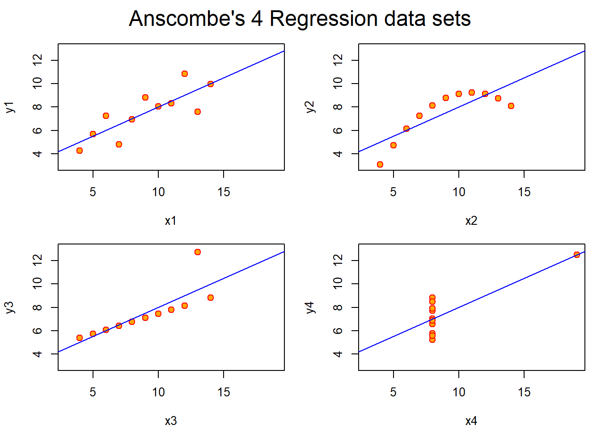

In this example, the linear regression line is the same for all the models and yet, their scatter plot tells us that there is a better option to fit the data.
x1 x2 x3 x4 y1
Min. : 4.0 Min. : 4.0 Min. : 4.0 Min. : 8 Min. : 4.260
1st Qu.: 6.5 1st Qu.: 6.5 1st Qu.: 6.5 1st Qu.: 8 1st Qu.: 6.315
Median : 9.0 Median : 9.0 Median : 9.0 Median : 8 Median : 7.580
Mean : 9.0 Mean : 9.0 Mean : 9.0 Mean : 9 Mean : 7.501
3rd Qu.:11.5 3rd Qu.:11.5 3rd Qu.:11.5 3rd Qu.: 8 3rd Qu.: 8.570
Max. :14.0 Max. :14.0 Max. :14.0 Max. :19 Max. :10.840
y2 y3 y4
Min. :3.100 Min. : 5.39 Min. : 5.250
1st Qu.:6.695 1st Qu.: 6.25 1st Qu.: 6.170
Median :8.140 Median : 7.11 Median : 7.040
Mean :7.501 Mean : 7.50 Mean : 7.501
3rd Qu.:8.950 3rd Qu.: 7.98 3rd Qu.: 8.190
Max. :9.260 Max. :12.74 Max. :12.500
```
For y1 ~ x1, the linear regression line seems to be a good fit for the model.
For y2 ~ x2, a quadratic regression line seems to be a better fit.
For y3 ~ x3 and y4 ~ x4, we might consider discarding the last data point as an outlier.
Call:
lm(formula = y1 ~ x1, data = anscombe)
Residuals:
Min 1Q Median 3Q Max
-1.92127 -0.45577 -0.04136 0.70941 1.83882
Coefficients:
Estimate Std. Error t value Pr(>|t|)
(Intercept) 3.0001 1.1247 2.667 0.02573 *
x1 0.5001 0.1179 4.241 0.00217 **
---
Signif. codes: 0 '***' 0.001 '**' 0.01 '*' 0.05 '.' 0.1 ' ' 1
Residual standard error: 1.237 on 9 degrees of freedom
Multiple R-squared: 0.6665, Adjusted R-squared: 0.6295
F-statistic: 17.99 on 1 and 9 DF, p-value: 0.00217
Call:
lm(formula = y2 ~ x2, data = anscombe)
Residuals:
Min 1Q Median 3Q Max
-1.9009 -0.7609 0.1291 0.9491 1.2691
Coefficients:
Estimate Std. Error t value Pr(>|t|)
(Intercept) 3.001 1.125 2.667 0.02576 *
x2 0.500 0.118 4.239 0.00218 **
---
Signif. codes: 0 '***' 0.001 '**' 0.01 '*' 0.05 '.' 0.1 ' ' 1
Residual standard error: 1.237 on 9 degrees of freedom
Multiple R-squared: 0.6662, Adjusted R-squared: 0.6292
F-statistic: 17.97 on 1 and 9 DF, p-value: 0.002179
Call:
lm(formula = y3 ~ x3, data = anscombe)
Residuals:
Min 1Q Median 3Q Max
-1.1586 -0.6146 -0.2303 0.1540 3.2411
Coefficients:
Estimate Std. Error t value Pr(>|t|)
(Intercept) 3.0025 1.1245 2.670 0.02562 *
x3 0.4997 0.1179 4.239 0.00218 **
---
Signif. codes: 0 '***' 0.001 '**' 0.01 '*' 0.05 '.' 0.1 ' ' 1
Residual standard error: 1.236 on 9 degrees of freedom
Multiple R-squared: 0.6663, Adjusted R-squared: 0.6292
F-statistic: 17.97 on 1 and 9 DF, p-value: 0.002176
Call:
lm(formula = y4 ~ x4, data = anscombe)
Residuals:
Min 1Q Median 3Q Max
-1.751 -0.831 0.000 0.809 1.839
Coefficients:
Estimate Std. Error t value Pr(>|t|)
(Intercept) 3.0017 1.1239 2.671 0.02559 *
x4 0.4999 0.1178 4.243 0.00216 **
---
Signif. codes: 0 '***' 0.001 '**' 0.01 '*' 0.05 '.' 0.1 ' ' 1
Residual standard error: 1.236 on 9 degrees of freedom
Multiple R-squared: 0.6667, Adjusted R-squared: 0.6297
F-statistic: 18 on 1 and 9 DF, p-value: 0.002165
Analysis of Variance Table
Response: y1
Df Sum Sq Mean Sq F value Pr(>F)
x1 1 27.510 27.5100 17.99 0.00217 **
Residuals 9 13.763 1.5292
---
Signif. codes: 0 '***' 0.001 '**' 0.01 '*' 0.05 '.' 0.1 ' ' 1
Analysis of Variance Table
Response: y2
Df Sum Sq Mean Sq F value Pr(>F)
x2 1 27.500 27.5000 17.966 0.002179 **
Residuals 9 13.776 1.5307
---
Signif. codes: 0 '***' 0.001 '**' 0.01 '*' 0.05 '.' 0.1 ' ' 1
Analysis of Variance Table
Response: y3
Df Sum Sq Mean Sq F value Pr(>F)
x3 1 27.470 27.4700 17.972 0.002176 **
Residuals 9 13.756 1.5285
---
Signif. codes: 0 '***' 0.001 '**' 0.01 '*' 0.05 '.' 0.1 ' ' 1
Analysis of Variance Table
Response: y4
Df Sum Sq Mean Sq F value Pr(>F)
x4 1 27.490 27.4900 18.003 0.002165 **
Residuals 9 13.742 1.5269
---
Signif. codes: 0 '***' 0.001 '**' 0.01 '*' 0.05 '.' 0.1 ' ' 1
$lm1
Estimate Std. Error t value Pr(>|t|)
(Intercept) 3.0000909 1.1247468 2.667348 0.025734051
x1 0.5000909 0.1179055 4.241455 0.002169629
$lm2
Estimate Std. Error t value Pr(>|t|)
(Intercept) 3.000909 1.1253024 2.666758 0.025758941
x2 0.500000 0.1179637 4.238590 0.002178816
$lm3
Estimate Std. Error t value Pr(>|t|)
(Intercept) 3.0024545 1.1244812 2.670080 0.025619109
x3 0.4997273 0.1178777 4.239372 0.002176305
$lm4
Estimate Std. Error t value Pr(>|t|)
(Intercept) 3.0017273 1.1239211 2.670763 0.025590425
x4 0.4999091 0.1178189 4.243028 0.002164602

## 2. Fine tune the charts with RGraphics by Murrell
## 3. Fine tune the charts with ggplot
Source Code
---title: "Assignment 3"author: "Vikrant Sagar R"date: "2022-09-24"categories: [Code, R, Plots, Assignment]draft: falseformat: html: code-fold: true code-tools: trueexecute: echo: false---\## 1. Explore Anscombe (1973) QuartletIn this example, the linear regression line is the same for all the models and yet, their scatter plot tells us that there is a better option to fit the data.```{r}#| echo: false#| fig-cap: "Simple Model"## Anscombe (1973) Quartletrm(list=ls())data(anscombe) # Load Anscombe's data## Simple versionplot(anscombe$x1,anscombe$y1)summary(anscombe)```\`\`\`For y1 \~ x1, the linear regression line seems to be a good fit for the model.For y2 \~ x2, a quadratic regression line seems to be a better fit.For y3 \~ x3 and y4 \~ x4, we might consider discarding the last data point as an outlier.```{r}#| echo: false#| output: false#| fig-cap: "Four Model Objects"#| fig-subcap:#| - "y1 ~ x1"#| - "y2 ~ x2"#| - "y3 ~ x3"#| - "y4 ~ x4"#| layout-ncol: 2#| layout-nrow: 2# Create four model objectslm1 <-lm(y1 ~ x1, data=anscombe)summary(lm1)lm2 <-lm(y2 ~ x2, data=anscombe)summary(lm2)lm3 <-lm(y3 ~ x3, data=anscombe)summary(lm3)lm4 <-lm(y4 ~ x4, data=anscombe)summary(lm4)plot(anscombe$x1,anscombe$y1)abline(coefficients(lm1))plot(anscombe$x2,anscombe$y2)abline(coefficients(lm2))plot(anscombe$x3,anscombe$y3)abline(coefficients(lm3))plot(anscombe$x4,anscombe$y4)abline(coefficients(lm4))``````{r}#| echo: false## Fancy version (per help file)ff <- y ~ xmods <-setNames(as.list(1:4), paste0("lm", 1:4))# Plot using for loopfor(i in1:4) { ff[2:3] <-lapply(paste0(c("y","x"), i), as.name)## or ff[[2]] <- as.name(paste0("y", i))## ff[[3]] <- as.name(paste0("x", i)) mods[[i]] <- lmi <-lm(ff, data = anscombe)print(anova(lmi))}sapply(mods, coef) # Note the use of this functionlapply(mods, function(fm) coef(summary(fm)))# Preparing for the plotsop <-par(mfrow =c(2, 2), mar =0.1+c(4,4,1,1), oma =c(0, 0, 2, 0))# Plot charts using for loopfor(i in1:4) { ff[2:3] <-lapply(paste0(c("y","x"), i), as.name)plot(ff, data = anscombe, col ="red", pch =21, bg ="orange", cex =1.2,xlim =c(3, 19), ylim =c(3, 13))abline(mods[[i]], col ="blue")}mtext("Anscombe's 4 Regression data sets", outer =TRUE, cex =1.5)par(op)```\## 2. Fine tune the charts with RGraphics by Murrell```{r}#| echo: false#| fig-cap: "x1 ~ y1 Chart fine-tuned with RGraphics by Murrell"par(las=1, mar=c(5, 5, 2, 2), cex=.7) plot.new()plot.window(range(anscombe$x1), c(0, 6))plot(anscombe$x1,anscombe$y1, ylab ="", xlab ="")points(anscombe$x1,anscombe$y1, pch=16, cex=2)abline(coefficients(lm1))mtext("x1", side=1, line=3, cex=0.8)mtext("y1", side=2, line=3, las=0, cex=0.8)```\## 3. Fine tune the charts with ggplot```{r}#| echo: false#| fig-cap: "x1 ~ y1 Chart fine-tuned with ggplot2"library(ggplot2)ggplot(anscombe, aes(x1, y1)) +geom_point()+geom_line()```